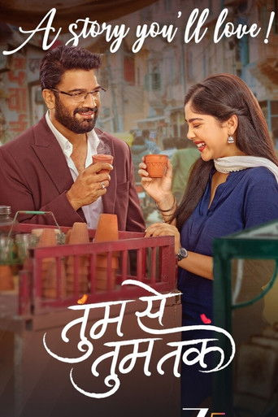
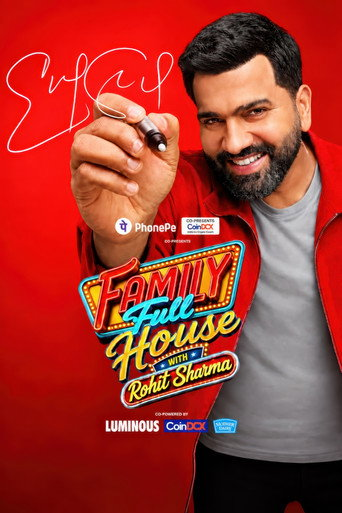
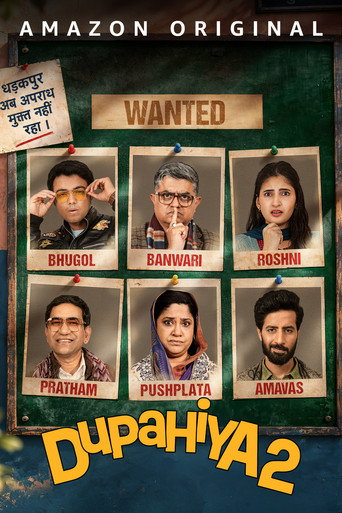
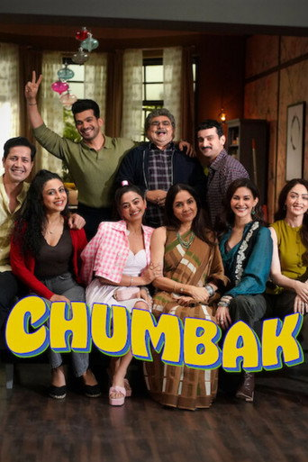
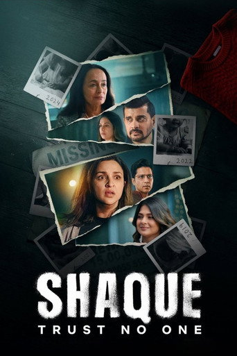

Top 10 Indian TV Shows TV + streaming
-
1—

Bigg Boss · Season 20
ColorsJioHotstarSalman Khan hosts the 20th season of the house-arrest reality show. Ormax says it was the first show other than cricket to pass 20M viewers in one week this year.
Popularity#1 FMN Week 40 (837) · 21M viewers in a week (Ormax)RatingReality show · ranked on audience size -
2NEW

The Great Indian Kapil Show · Season 5
NetflixKapil Sharma is back with Sunil Grover, Krushna Abhishek and Archana Puran Singh, and a new episode drops every Saturday. Ajay Devgn and the Drishyam cast opened the season.
Popularity12.88M viewers 4–8 Oct (Chrome DM COTT) · in Netflix India top 10RatingComedy talk show · ranked on audience size -
3—

Oh Humnava Tum Dena Saath Mera
Star PlusJioHotstarSriti Jha and Shabir Ahluwalia, the couple from Kumkum Bhagya, are back together as an artist and a reserved businessman. It is the top daily soap on FMN's chart this week.
Popularity#2 FMN Week 40 (830) · top daily soapRatingDaily soap · ranked on audience size -
4—

Seher Hone Ko Hai
ColorsJioHotstarA Lucknow drama about a mother who will not let her daughter be married off young, as she was. After a seven-year leap, Bhavika Sharma plays the new Seher opposite Parth Samthaan.
Popularity#3 FMN Week 40 (828) · Colors' top soapRatingDaily soap · ranked on audience size -
5—

Tumm Se Tumm Tak
Zee TVZEE5Sharad Kelkar plays a 46-year-old tycoon who falls for a 19-year-old, played by Niharika Chouksey. It is still Zee TV's strongest show, more than a year after launch.
Popularity#4 FMN Week 40 (826) · Zee TV's top showRatingDaily soap · ranked on audience size -
6—

Yeh Fitoor Tera
Star PlusJioHotstarDebchandrima Singha Roy and Ishaan Dhawan lead a love story, and Aman Verma returns to Star Plus in it. Two months after launch, it already beats Anupamaa and Yeh Rishta on FMN's chart.
Popularity#5 FMN Week 40 (823)RatingDaily soap · ranked on audience size -
7NEW

Family Full House with Rohit Sharma
Sony Entertainment TelevisionSonyLIVCricketer Rohit Sharma makes his TV debut as host of a family game show. It drew 7.62M viewers in its first three days.
Popularity7.62M viewers 19–21 Sep (Chrome DM COTT)RatingGame show · ranked on audience size -
8NEW

Dupahiya · Season 2
Prime VideoGajraj Rao and Renuka Shahane return to the village comedy. This season is about an exam paper leak, and Nirahua joins the cast. It is the best-reviewed new Hindi series this week.
PopularityNew on Prime Video 1 Oct · no viewer numbers yetRating3/5 Pinkvilla · 3/5 Flickonclick · positive Hollywood Reporter India review -
9—

Chumbak
NetflixNeena Gupta leads a 16-episode sitcom about five families in one housing colony. It comes from Jamnadas Majethia, co-creator of Sarabhai vs Sarabhai. It has stayed in Netflix India's top 10 for weeks.
PopularityIn Netflix India top 10 showsRatingMixed reviews · Hollywood Reporter India: "relentless silliness" -
10NEW

Shaque: Trust No One
NetflixParineeti Chopra and Jennifer Winget lead a seven-episode mystery directed by Rensil D'Silva. Viewers are watching it, but critics say the plot falls apart.
PopularityIn Netflix India top 10 showsRating25% Rotten Tomatoes (12 reviews) · 3/5 Business Upturn
How this list is ranked
- Popularity: Ormax StreamView for streaming (unique viewers in India who watched at least 30 minutes). For TV, BARC weekly ratings are the main source, with FMN's weekly rating as the fallback.
- Ratings: critic scores from major Indian outlets for scripted shows. Reality, quiz and daily shows are ranked on popularity alone.
- One list for TV and streaming: a show that is on both counts once.
- This week: BARC weekly TV ratings are still paused during a policy change, so the TV rankings use FMN's Week 40 chart. Ormax's weekly StreamView lists are not public, so streaming uses Chrome DM COTT viewer data and Netflix India's top 10.
- NEW: with a previous week to compare, NEW marks a title new to the list; on a list's first week, a title released in the last 3 weeks.